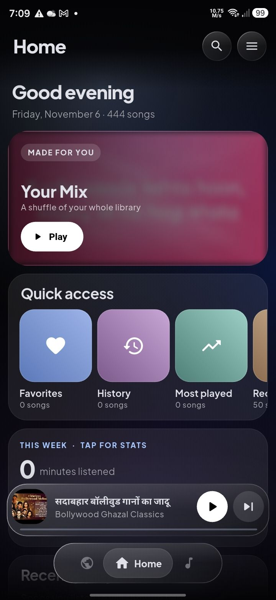
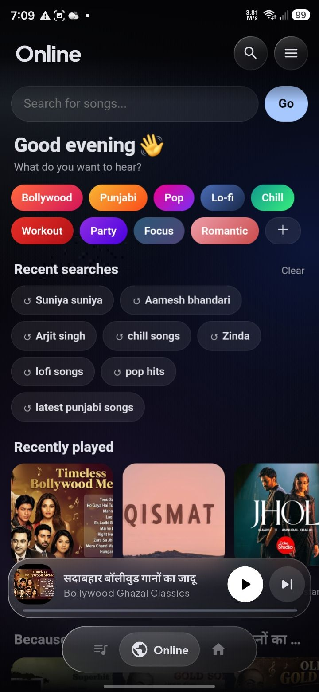
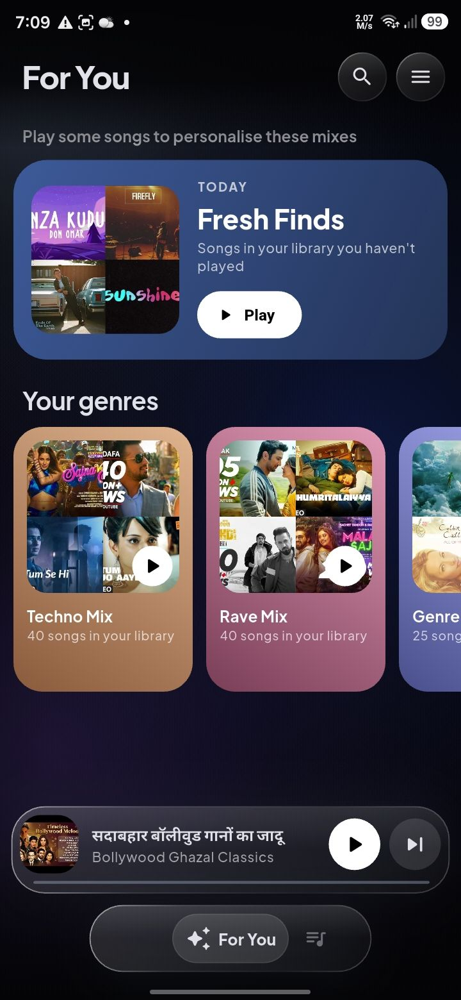
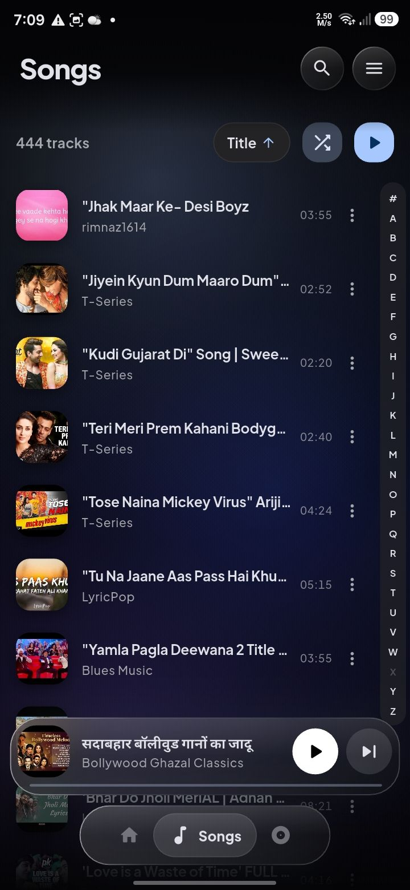
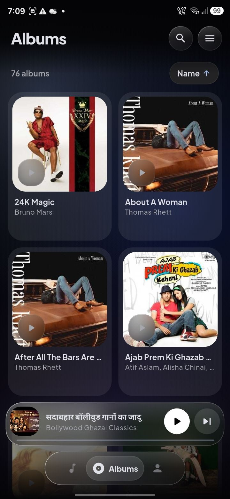
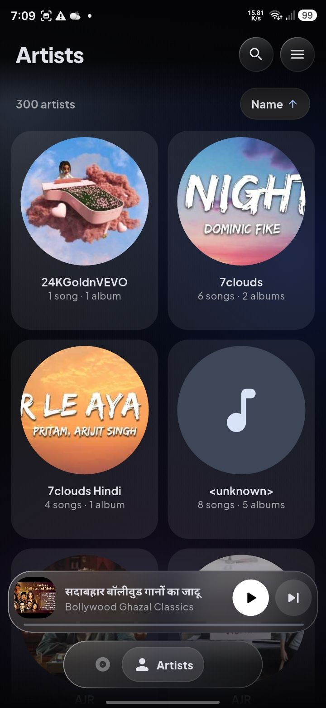

🎵
Your whole library
Songs, albums and artists from your phone, with fast A–Z scrolling, sorting and gapless shuffle.
Musie is a music player for the songs on your phone, with synced lyrics, live radio, AI mood mixes and online plugins.


Built for the songs you already have, with a little extra.
Songs, albums and artists from your phone, with fast A–Z scrolling, sorting and gapless shuffle.
Fresh Finds, mixes from your genres and "because you played", made from your own listening.
Time-synced lyrics, plus AI transcription with romanised lines for Hindi and Punjabi songs.
Notification and lock-screen controls, headset buttons, and your queue restored next time.
Thousands of stations: Bollywood, Punjabi, Australian and worldwide, in the Online tab.
Tap Bollywood, Lo-fi or Workout (or make your own mood) and get a 10-song mix that keeps going.
See how much you listened this week, your most played songs and listening history.
Add web plugins to the Online tab. Start with YStream: search, stream, download with covers and tags.
Swipe through the app.




musie.apk on your Android phone.Updating: download the newest APK and install it over the old one. Your songs, playlists and settings stay.
ystream-plugin.zip (don't unzip it).Optional: add your own free Gemini key in Settings for unlimited AI mixes and lyrics.
Every update is built automatically from the latest code.
Loading updates…
No account, no ads, no tracking. Your library, playlists, history and stats stay on your phone.
Some features go online:
Musie is an independent student project. It isn't affiliated with Google, YouTube, Last.fm or any radio station.
The YStream plugin is optional and meant for personal use. Please respect YouTube's Terms of Service and the rights of artists.
Musie is installed from this page, not from Google Play. Your phone shows a warning the first time; that's normal for apps installed this way.